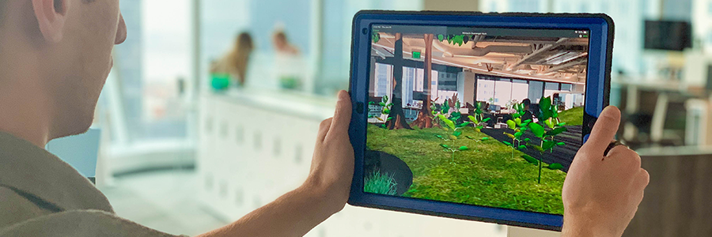
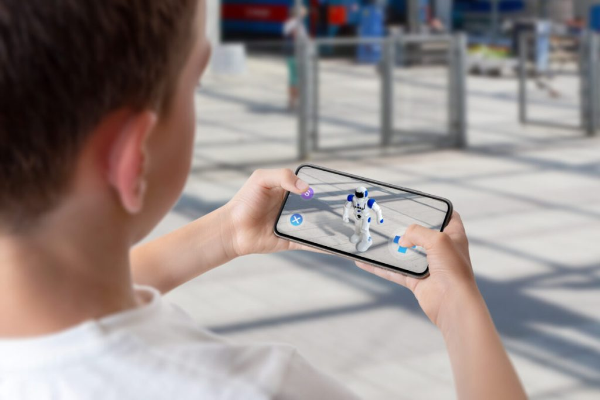
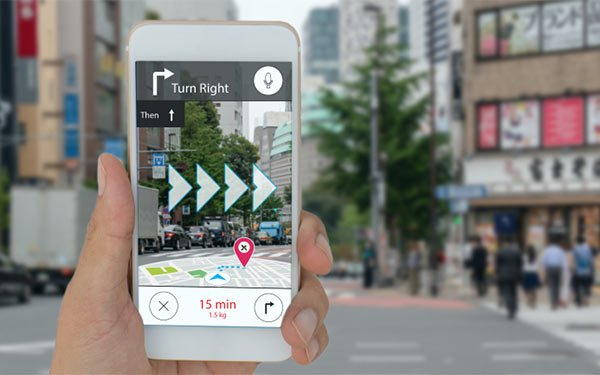

This week’s reading is closely related to AR/VR creation. Especially when I was creating the immersive experience of Winchester Cathedral, the biggest challenge I faced was that I hoped the audience could not only be immersed in the story but also influence it. However, how can I strike a balance between these two aspects? These articles all provide some directions.

PTC. (n.d.). Creating Immersive AR Experiences [Online image]. Available at: https://www.ptc.com/en/blogs/education/creating-immersive-ar-experiences (Accessed: 20 March 2025)
Ryan clearly points out a challenge in Narrative as Virtual Reality, immersion and interaction often conflict with each other. For example, if you are attentively “listening to a recording of a medieval monk’s prayer,” but suddenly three options pop up on the screen asking you “where to go next,” the sense of immersion will be instantly broken. However, if users are given no choices at all, they will feel that the experience is “controlled.” Therefore, when I design the script for AR, I wonder if it is possible to “invisibilize” the interaction. For instance, when users approach a certain space, a certain piece of content is automatically triggered. What they are making is a choice of “spatial behavior” rather than clicking on options. In this way, their “participation” will not interrupt their immersion.

UltronAR. (n.d.). AR Interactions [Online image]. Available at: https://ultronar.com/ar-interactions/ (Accessed: 20 March 2025)
Murray’s theory of “agency” is also extremely inspiring. She said that a “good interactive experience” doesn’t mean providing endless choices, but rather making users feel that “their actions are respected.” This reminds me of something. In my project, when users approached the sculpture related to Sound, what I originally set was that “the sound of water would play automatically.” However, later I realized that this was as un-interactive as “background music.” So I tried to create a “response mechanism.” Only when users reached out and clicked on the sculpture would the relevant story be triggered. This kind of “action-response” mechanism can make them feel more strongly that they are the initiators of the story, rather than mere onlookers.

Martin, C. (2019). VR, AR Can Improve Brand Perception: Study [Online image]. Available at: https://www.mediapost.com/publications/article/334246/vr-ar-can-improve-brand-perception-study.html (Accessed: 20 March 2025)
And McLuhan’s proposition that “the medium is the message” has made me reflect on what I am actually doing with AR. He said that the medium not only affects what we see, but also how we see. Therefore, AR is not just a tool for conveying the history of Winchester Cathedral. It is in itself a brand-new way of understanding history, a way of “stepping into history.” Perhaps the most core change brought about by this approach is not an increase in the amount of information, but a reconstruction of the way of perception. The transformation from static viewing to dynamic immersion, and from passive reception to participation in construction, these changes themselves, as McLuhan said, are the “true message.”
In general, this week has made me realize more clearly that my task is not just to tell a story, but to establish a relationship that enables users to be touched and make choices in the virtual space. And it is precisely this relationship that represents the most powerful aspect of AR.
Reading list
- Ryan, M-L. (2001). Narrative as Virtual Reality, Chapter 2: Immersion and Interactivity
- Murray, J. (1997). Hamlet on the Holodeck, Chapter 4: Agency
- McLuhan, M. (1964). Understanding Media: The Extensions of Man, Chapter 1: The Medium is the Message